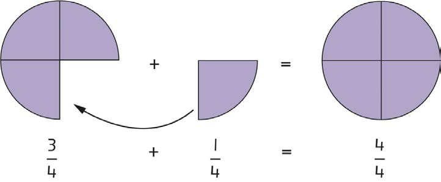

Kujumlisha sehemu zenye asili moja
Ili kuongeza sehemu zenye asili moja, ongeza kiasi tu na asili isibadilike.
Mfano wa 1
Tumia michoro kujibu swali lifuatalo:
Hatua
1.
Chora robo tatu ya duara na tia kivuli.
2.
Andika sehemu iliyotiwa kivuli kwa numerali
3.
Chora robo duara na tia kivuli.
4.
Andika kwa numerali sehemu iliyotiwa kivuli
5.
Jumlisha idadi ya sehemu zilizotiwa kivuli kupata umbo la duara.
6.
Chora na tia kivuli kuonesha jumla ya robo tatu na robo.
7.
Andika sehemu iliyotiwa kivuli kwa numerali.

Jibu ni duara moja lililotiwa kivuli na kugawanywa katika sehemu nne zilizo sawa. Kujumlisha sehemu zenye asili moja, jumlisha kiasi kama unavyojumlisha namba za kawaida. Asili haibadiliki kwa kuwa sehemu zinaunda kitu kimoja.
Hivyo,
Kwa hiyo,